Spring 2026
University of Georgia
Materials from Jin Sun jinsun@uga.edu
The materials are adapated from: https://jakevdp.github.io/PythonDataScienceHandbook/. The book contains all the details that might be omitted in this lecture.
Visualization with Matplotlib#
We’ll now take an in-depth look at the Matplotlib package for visualization in Python.
Matplotlib is a multiplatform data visualization library built on NumPy arrays and designed to work with the broader SciPy stack.
It was conceived by John Hunter in 2002, originally as a patch to IPython for enabling interactive MATLAB-style plotting via gnuplot from the IPython command line.
IPython’s creator, Fernando Perez, was at the time scrambling to finish his PhD, and let John know he wouldn’t have time to review the patch for several months.
John took this as a cue to set out on his own, and the Matplotlib package was born, with version 0.1 released in 2003.
It received an early boost when it was adopted as the plotting package of choice of the Space Telescope Science Institute (the folks behind the Hubble Telescope), which financially supported Matplotlib’s development and greatly expanded its capabilities.
One of Matplotlib’s most important features is its ability to play well with many operating systems and graphics backends. Matplotlib supports dozens of backends and output types, which means you can count on it to work regardless of which operating system you are using or which output format you desire. This cross-platform, everything-to-everyone approach has been one of the great strengths of Matplotlib. It has led to a large user base, which in turn has led to an active developer base and Matplotlib’s powerful tools and ubiquity within the scientific Python world.
In recent years, however, the interface and style of Matplotlib have begun to show their age.
Newer tools like ggplot and ggvis in the R language, along with web visualization toolkits based on D3js and HTML5 canvas, often make Matplotlib feel clunky and old-fashioned.
Recent Matplotlib versions make it relatively easy to set new global plotting styles and people have been developing new packages that build on its powerful internals to drive Matplotlib via cleaner, more modern APIs—for example, Seaborn (will be discussed later), ggpy, HoloViews, and even Pandas itself can be used as wrappers around Matplotlib’s API.
General Matplotlib Tips#
Before we dive into the details of creating visualizations with Matplotlib, there are a few useful things you should know about using the package.
Importing Matplotlib#
Just as we use the np shorthand for NumPy and the pd shorthand for Pandas, we will use some standard shorthands for Matplotlib imports:
import matplotlib as mpl
import matplotlib.pyplot as plt
The plt interface is what we will use most often, as you shall see throughout this part of the book.
Setting Styles#
We will use the plt.style directive to choose appropriate aesthetic styles for our figures.
Here we will set the classic style, which ensures that the plots we create use the classic Matplotlib style:
plt.style.use('classic')
show or No show? How to Display Your Plots#
A visualization you can’t see won’t be of much use, but just how you view your Matplotlib plots depends on the context. The best use of Matplotlib differs depending on how you are using it; roughly, the three applicable contexts are using Matplotlib in a script, in an IPython terminal, or in a Jupyter notebook.
Plotting from a Script#
If you are using Matplotlib from within a script, the function plt.show is your friend.
plt.show starts an event loop, looks for all currently active Figure objects, and opens one or more interactive windows that display your figure or figures.
So, for example, you may have a file called myplot.py containing the following:
# file: myplot.py
import matplotlib.pyplot as plt
import numpy as np
x = np.linspace(0, 10, 100)
plt.plot(x, np.sin(x))
plt.plot(x, np.cos(x))
plt.show()
You can then run this script from the command-line prompt, which will result in a window opening with your figure displayed:
$ python myplot.py
The plt.show command does a lot under the hood, as it must interact with your system’s interactive graphical backend.
The details of this operation can vary greatly from system to system and even installation to installation, but Matplotlib does its best to hide all these details from you.
One thing to be aware of: the plt.show command should be used only once per Python session, and is most often seen at the very end of the script.
Multiple show commands can lead to unpredictable backend-dependent behavior, and should mostly be avoided.
Plotting from an IPython Shell#
Matplotlib also works seamlessly within an IPython shell (see IPython: Beyond Normal Python).
IPython is built to work well with Matplotlib if you specify Matplotlib mode.
To enable this mode, you can use the %matplotlib magic command after starting ipython:
In [1]: %matplotlib
Using matplotlib backend: TkAgg
In [2]: import matplotlib.pyplot as plt
At this point, any plt plot command will cause a figure window to open, and further commands can be run to update the plot.
Some changes (such as modifying properties of lines that are already drawn) will not draw automatically: to force an update, use plt.draw.
Using plt.show in IPython’s Matplotlib mode is not required.
Plotting from a Jupyter Notebook#
The Jupyter notebook is a browser-based interactive data analysis tool that can combine narrative, code, graphics, HTML elements, and much more into a single executable document.
Plotting interactively within a Jupyter notebook can be done with the %matplotlib command, and works in a similar way to the IPython shell.
You also have the option of embedding graphics directly in the notebook, with two possible options:
%matplotlib inlinewill lead to static images of your plot embedded in the notebook.%matplotlib notebookwill lead to interactive plots embedded within the notebook. *Note: this option is not working with Google Colab
For this book, we will generally stick with the default, with figures rendered as static images (see the following figure for the result of this basic plotting example):
%matplotlib inline
import numpy as np
x = np.linspace(0, 10, 100)
fig = plt.figure()
plt.plot(x, np.sin(x), '-')
plt.plot(x, np.cos(x), '--');
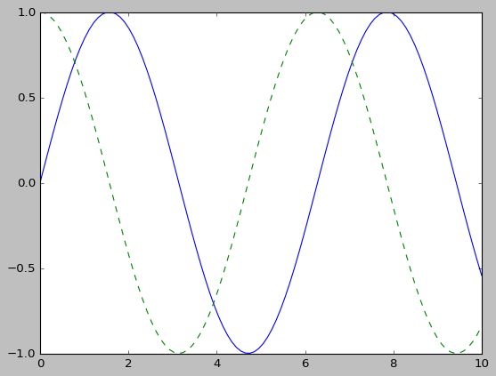
Saving Figures to File#
One nice feature of Matplotlib is the ability to save figures in a wide variety of formats.
Saving a figure can be done using the savefig command.
For example, to save the previous figure as a PNG file, we can run this:
fig.savefig('my_figure_fig.png')
We now have a file called my_figure.png in the current working directory:
!ls -lh my_figure.png
'ls' is not recognized as an internal or external command,
operable program or batch file.
To confirm that it contains what we think it contains, let’s use the IPython Image object to display the contents of this file (see the following figure):
from IPython.display import Image
Image('my_figure.png')
---------------------------------------------------------------------------
TypeError Traceback (most recent call last)
File ~\AppData\Local\Programs\Python\Python312\Lib\site-packages\IPython\core\display.py:1100, in Image._data_and_metadata(self, always_both)
1099 try:
-> 1100 b64_data = b2a_base64(self.data, newline=False).decode("ascii")
1101 except TypeError as e:
TypeError: a bytes-like object is required, not 'str'
The above exception was the direct cause of the following exception:
FileNotFoundError Traceback (most recent call last)
File ~\AppData\Local\Programs\Python\Python312\Lib\site-packages\IPython\core\formatters.py:1036, in MimeBundleFormatter.__call__(self, obj, include, exclude)
1033 method = get_real_method(obj, self.print_method)
1035 if method is not None:
-> 1036 return method(include=include, exclude=exclude)
1037 return None
1038 else:
File ~\AppData\Local\Programs\Python\Python312\Lib\site-packages\IPython\core\display.py:1090, in Image._repr_mimebundle_(self, include, exclude)
1088 if self.embed:
1089 mimetype = self._mimetype
-> 1090 data, metadata = self._data_and_metadata(always_both=True)
1091 if metadata:
1092 metadata = {mimetype: metadata}
File ~\AppData\Local\Programs\Python\Python312\Lib\site-packages\IPython\core\display.py:1102, in Image._data_and_metadata(self, always_both)
1100 b64_data = b2a_base64(self.data, newline=False).decode("ascii")
1101 except TypeError as e:
-> 1102 raise FileNotFoundError(
1103 "No such file or directory: '%s'" % (self.data)) from e
1104 md = {}
1105 if self.metadata:
FileNotFoundError: No such file or directory: 'my_figure.png'
---------------------------------------------------------------------------
TypeError Traceback (most recent call last)
File ~\AppData\Local\Programs\Python\Python312\Lib\site-packages\IPython\core\display.py:1100, in Image._data_and_metadata(self, always_both)
1099 try:
-> 1100 b64_data = b2a_base64(self.data, newline=False).decode("ascii")
1101 except TypeError as e:
TypeError: a bytes-like object is required, not 'str'
The above exception was the direct cause of the following exception:
FileNotFoundError Traceback (most recent call last)
File ~\AppData\Local\Programs\Python\Python312\Lib\site-packages\IPython\core\formatters.py:406, in BaseFormatter.__call__(self, obj)
404 method = get_real_method(obj, self.print_method)
405 if method is not None:
--> 406 return method()
407 return None
408 else:
File ~\AppData\Local\Programs\Python\Python312\Lib\site-packages\IPython\core\display.py:1122, in Image._repr_png_(self)
1120 def _repr_png_(self):
1121 if self.embed and self.format == self._FMT_PNG:
-> 1122 return self._data_and_metadata()
File ~\AppData\Local\Programs\Python\Python312\Lib\site-packages\IPython\core\display.py:1102, in Image._data_and_metadata(self, always_both)
1100 b64_data = b2a_base64(self.data, newline=False).decode("ascii")
1101 except TypeError as e:
-> 1102 raise FileNotFoundError(
1103 "No such file or directory: '%s'" % (self.data)) from e
1104 md = {}
1105 if self.metadata:
FileNotFoundError: No such file or directory: 'my_figure.png'
<IPython.core.display.Image object>
In savefig, the file format is inferred from the extension of the given filename.
Depending on what backends you have installed, many different file formats are available.
The list of supported file types can be found for your system by using the following method of the figure canvas object:
fig.canvas.get_supported_filetypes()
{'eps': 'Encapsulated Postscript',
'jpg': 'Joint Photographic Experts Group',
'jpeg': 'Joint Photographic Experts Group',
'pdf': 'Portable Document Format',
'pgf': 'PGF code for LaTeX',
'png': 'Portable Network Graphics',
'ps': 'Postscript',
'raw': 'Raw RGBA bitmap',
'rgba': 'Raw RGBA bitmap',
'svg': 'Scalable Vector Graphics',
'svgz': 'Scalable Vector Graphics',
'tif': 'Tagged Image File Format',
'tiff': 'Tagged Image File Format',
'webp': 'WebP Image Format'}
Note that when saving your figure, it is not necessary to use plt.show or related commands discussed earlier.
Two Interfaces for the Price of One#
A potentially confusing feature of Matplotlib is its dual interfaces: a convenient MATLAB-style state-based interface, and a more powerful object-oriented interface. I’ll quickly highlight the differences between the two here.
MATLAB-style Interface#
Matplotlib was originally conceived as a Python alternative for MATLAB users, and much of its syntax reflects that fact.
The MATLAB-style tools are contained in the pyplot (plt) interface.
For example, the following code will probably look quite familiar to MATLAB users (the following figure shows the result):
plt.style.use('default')
plt.figure() # create a plot figure
# create the first of two panels and set current axis
# plt.subplot(2, 1, 1) # (rows, columns, panel number)
plt.plot(x, np.sin(x))
# create the second panel and set current axis
# plt.subplot(2, 1, 2)
plt.plot(x, np.cos(x));
plt.plot(x, np.cos(2*x));
plt.figure()
plt.plot(x, np.cos(4*x));
plt.savefig('my_figure_plt.png')
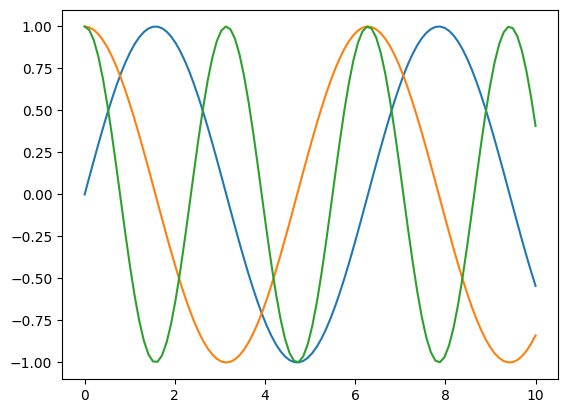
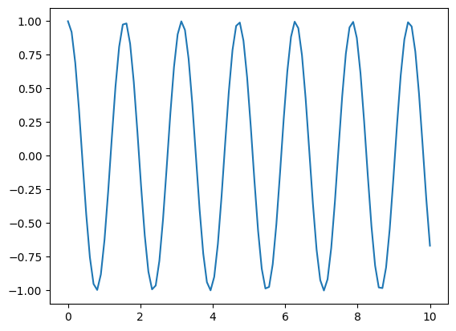
It is important to recognize that this interface is stateful: it keeps track of the “current” figure and axes, which are where all plt commands are applied.
You can get a reference to these using the plt.gcf (get current figure) and plt.gca (get current axes) routines.
While this stateful interface is fast and convenient for simple plots, it is easy to run into problems. For example, once the second panel is created, how can we go back and add something to the first? This is possible within the MATLAB-style interface, but a bit clunky. Fortunately, there is a better way.
Object-oriented interface#
The object-oriented interface is available for these more complicated situations, and for when you want more control over your figure.
Rather than depending on some notion of an “active” figure or axes, in the object-oriented interface the plotting functions are methods of explicit Figure and Axes objects.
To re-create the previous plot using this style of plotting, as shown in the following figure, you might do the following:
# First create a grid of plots
# ax will be an array of two Axes objects
fig, ax = plt.subplots(2)
# Call plot() method on the appropriate object
ax[0].plot(x, np.sin(x))
ax[0].plot(x, np.sin(2*x))
ax[1].plot(x, np.cos(x));
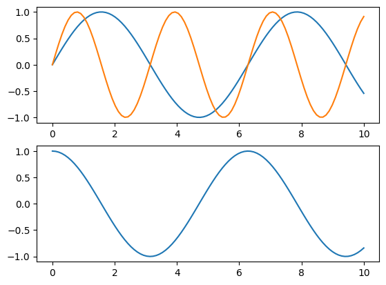
print(ax)
[<Axes: > <Axes: >]
For simpler plots, the choice of which style to use is largely a matter of preference, but the object-oriented approach can become a necessity as plots become more complicated.
Throughout the following chapters, we will switch between the MATLAB-style and object-oriented interfaces, depending on what is most convenient.
In most cases, the difference is as small as switching plt.plot to ax.plot, but there are a few gotchas that I will highlight as they come up in the following chapters.
You can add more plots to any ax.
ax[0].plot(x, np.sin(4*x),'r');
fig
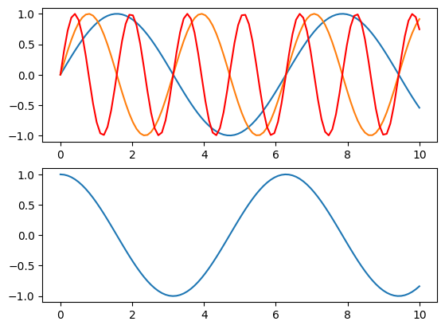
Simple Line Plots#
Perhaps the simplest of all plots is the visualization of a single function \(y = f(x)\). Here we will take a first look at creating a simple plot of this type. As in all the following chapters, we’ll start by setting up the notebook for plotting and importing the packages we will use:
%matplotlib inline
import matplotlib.pyplot as plt
print(plt.style.available)
plt.style.use('seaborn-v0_8-whitegrid')
import numpy as np
['Solarize_Light2', '_classic_test_patch', '_mpl-gallery', '_mpl-gallery-nogrid', 'bmh', 'classic', 'dark_background', 'fast', 'fivethirtyeight', 'ggplot', 'grayscale', 'seaborn-v0_8', 'seaborn-v0_8-bright', 'seaborn-v0_8-colorblind', 'seaborn-v0_8-dark', 'seaborn-v0_8-dark-palette', 'seaborn-v0_8-darkgrid', 'seaborn-v0_8-deep', 'seaborn-v0_8-muted', 'seaborn-v0_8-notebook', 'seaborn-v0_8-paper', 'seaborn-v0_8-pastel', 'seaborn-v0_8-poster', 'seaborn-v0_8-talk', 'seaborn-v0_8-ticks', 'seaborn-v0_8-white', 'seaborn-v0_8-whitegrid', 'tableau-colorblind10']
For all Matplotlib plots, we start by creating a figure and axes. In their simplest form, this can be done as follows (see the following figure):
fig = plt.figure()
ax = plt.axes()
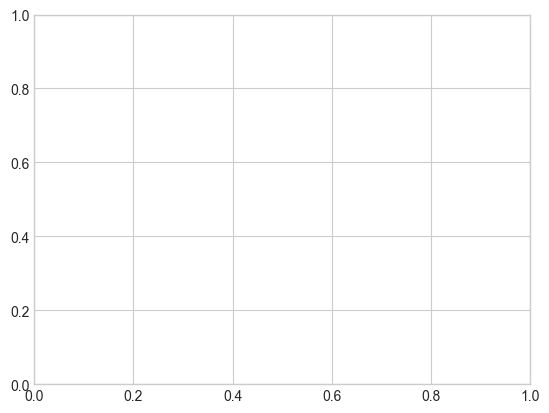
In Matplotlib, the figure (an instance of the class plt.Figure) can be thought of as a single container that contains all the objects representing axes, graphics, text, and labels.
The axes (an instance of the class plt.Axes) is what we see above: a bounding box with ticks, grids, and labels, which will eventually contain the plot elements that make up our visualization.
Throughout this part of the book, I’ll commonly use the variable name fig to refer to a figure instance and ax to refer to an axes instance or group of axes instances.
Once we have created an axes, we can use the ax.plot method to plot some data. Let’s start with a simple sinusoid, as shown in the following figure:
fig = plt.figure()
ax = plt.axes()
x = np.linspace(0, 10, 1000)
y = np.sin(x)
ax.plot(x, y);
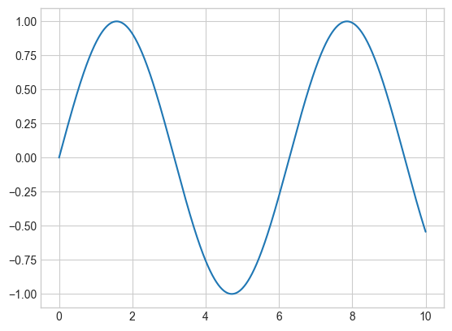
Note that the semicolon at the end of the last line is intentional: it suppresses the textual representation of the plot from the output.
Alternatively, we can use the PyLab interface and let the figure and axes be created for us in the background; as the following figure shows, the result is the same:
plt.plot(x, np.sin(x));
If we want to create a single figure with multiple lines (see the following figure), we can simply call the plot function multiple times:
plt.plot(x, np.sin(x))
plt.plot(x, np.cos(x));
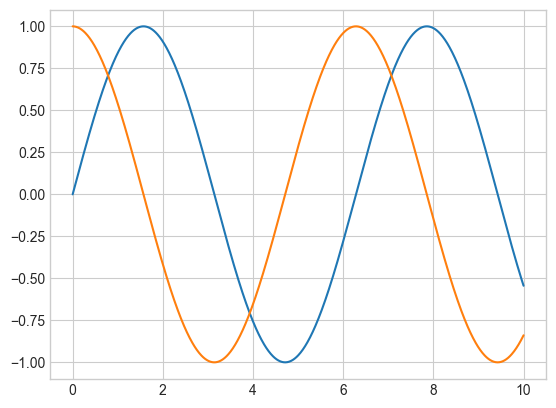
That’s all there is to plotting simple functions in Matplotlib! We’ll now dive into some more details about how to control the appearance of the axes and lines.
Adjusting the Plot: Line Colors and Styles#
The first adjustment you might wish to make to a plot is to control the line colors and styles.
The plt.plot function takes additional arguments that can be used to specify these.
To adjust the color, you can use the color keyword, which accepts a string argument representing virtually any imaginable color.
The color can be specified in a variety of ways; see the following figure for the output of the following examples:
plt.plot(x, np.sin(x - 0), color='blue') # specify color by name
plt.plot(x, np.sin(x - 1), color='g') # short color code (rgbcmyk)
plt.plot(x, np.sin(x - 2), color='0.75') # grayscale between 0 and 1
plt.plot(x, np.sin(x - 3), color='#FFDD44') # hex code (RRGGBB, 00 to FF)
plt.plot(x, np.sin(x - 4), color=(1.0,0.2,0.3)) # RGB tuple, values 0 to 1
plt.plot(x, np.sin(x - 5), color='chartreuse'); # HTML color names supported
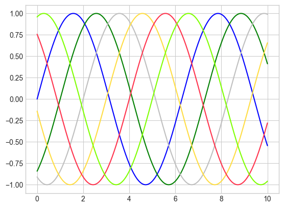
If no color is specified, Matplotlib will automatically cycle through a set of default colors for multiple lines.
Similarly, the line style can be adjusted using the linestyle keyword (see the following figure):
plt.plot(x, x + 0, linestyle='solid')
plt.plot(x, x + 1, linestyle='dashed')
plt.plot(x, x + 2, linestyle='dashdot')
plt.plot(x, x + 3, linestyle='dotted');
# For short, you can use the following codes:
plt.plot(x, x + 4, linestyle='-') # solid
plt.plot(x, x + 5, linestyle='--') # dashed
plt.plot(x, x + 6, linestyle='-.') # dashdot
plt.plot(x, x + 7, linestyle=':'); # dotted
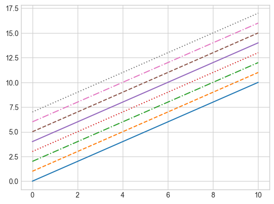
Though it may be less clear to someone reading your code, you can save some keystrokes by combining these linestyle and color codes into a single non-keyword argument to the plt.plot function; the following figure shows the result:
plt.plot(x, x + 0, '-g') # solid green
plt.plot(x, x + 1, '--c') # dashed cyan
plt.plot(x, x + 2, '-.k') # dashdot black
plt.plot(x, x + 3, ':r'); # dotted red
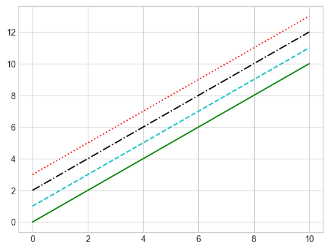
These single-character color codes reflect the standard abbreviations in the RGB (Red/Green/Blue) and CMYK (Cyan/Magenta/Yellow/blacK) color systems, commonly used for digital color graphics.
Adjusting the Plot: Axes Limits#
Matplotlib does a decent job of choosing default axes limits for your plot, but sometimes it’s nice to have finer control.
The most basic way to adjust the limits is to use the plt.xlim and plt.ylim functions (see the following figure):
plt.plot(x, np.sin(x))
plt.xlim(-1, 11)
plt.ylim(-0.5, 1.5);
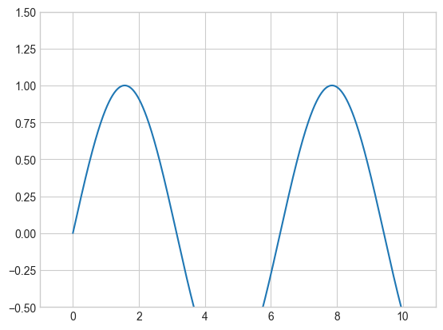
If for some reason you’d like either axis to be displayed in reverse, you can simply reverse the order of the arguments (see the following figure):
plt.plot(x, np.sin(x))
plt.xlim(10, 0)
plt.ylim(1.2, -1.2);
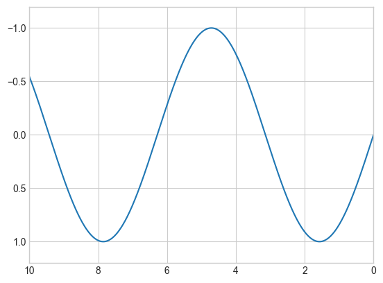
A useful related method is plt.axis (note here the potential confusion between axes with an e, and axis with an i), which allows more qualitative specifications of axis limits. For example, you can automatically tighten the bounds around the current content, as shown in the following figure:
plt.plot(x, np.sin(x))
plt.axis('tight');
Or you can specify that you want an equal axis ratio, such that one unit in x is visually equivalent to one unit in y, as seen in the following figure:
plt.plot(x, np.sin(x))
plt.axis('equal');
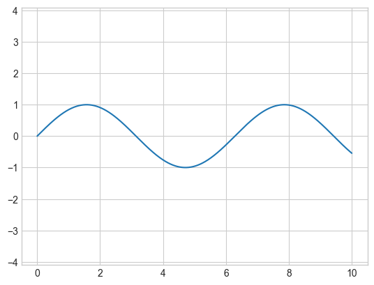
Other axis options include 'on', 'off', 'square', 'image', and more. For more information on these, refer to the plt.axis docstring.
Labeling Plots#
As the last piece of this chapter, we’ll briefly look at the labeling of plots: titles, axis labels, and simple legends. Titles and axis labels are the simplest such labels—there are methods that can be used to quickly set them (see the following figure):
plt.plot(x, np.sin(x))
plt.title("A Sine Curve ! ")
plt.xlabel("x")
plt.ylabel("sin(x)");
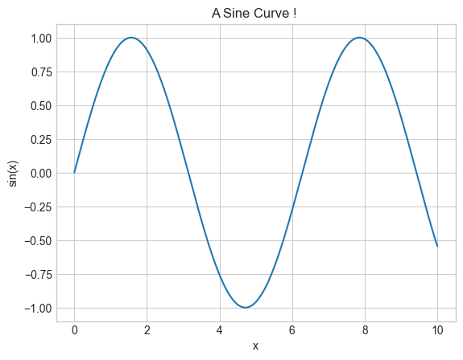
The position, size, and style of these labels can be adjusted using optional arguments to the functions, described in the docstrings.
When multiple lines are being shown within a single axes, it can be useful to create a plot legend that labels each line type.
Again, Matplotlib has a built-in way of quickly creating such a legend; it is done via the (you guessed it) plt.legend method.
Though there are several valid ways of using this, I find it easiest to specify the label of each line using the label keyword of the plot function (see the following figure):
plt.plot(x, np.sin(x), '-g', label='sin(x)')
plt.plot(x, np.cos(x), ':b', label='cos(x)')
plt.axis('equal')
plt.legend();
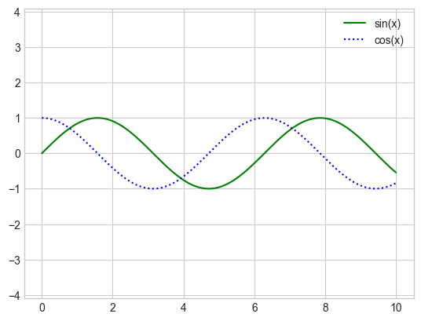
As you can see, the plt.legend function keeps track of the line style and color, and matches these with the correct label.
More information on specifying and formatting plot legends can be found in the plt.legend docstring.
Matplotlib Gotchas#
While most plt functions translate directly to ax methods (plt.plot → ax.plot, plt.legend → ax.legend, etc.), this is not the case for all commands.
In particular, functions to set limits, labels, and titles are slightly modified.
For transitioning between MATLAB-style functions and object-oriented methods, make the following changes:
plt.xlabel→ax.set_xlabelplt.ylabel→ax.set_ylabelplt.xlim→ax.set_xlimplt.ylim→ax.set_ylimplt.title→ax.set_title
In the object-oriented interface to plotting, rather than calling these functions individually, it is often more convenient to use the ax.set method to set all these properties at once (see the following figure):
ax = plt.axes()
ax.plot(x, np.sin(x))
ax.set(xlim=(0, 10), ylim=(-2, 2),
xlabel='x', ylabel='sin(x)',
title='A Simple Plot');
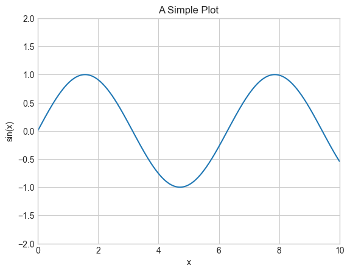
Simple Scatter Plots#
Another commonly used plot type is the simple scatter plot, a close cousin of the line plot. Instead of points being joined by line segments, here the points are represented individually with a dot, circle, or other shape. We’ll start by setting up the notebook for plotting and importing the packages we will use:
%matplotlib inline
import matplotlib.pyplot as plt
plt.style.use('seaborn-v0_8-whitegrid')
import numpy as np
Scatter Plots with plt.plot#
In the previous chapter we looked at using plt.plot/ax.plot to produce line plots.
It turns out that this same function can produce scatter plots as well (see the following figure):
x = np.linspace(0, 10, 30)
y = np.sin(x)
plt.plot(x, y, 'o', color='black');
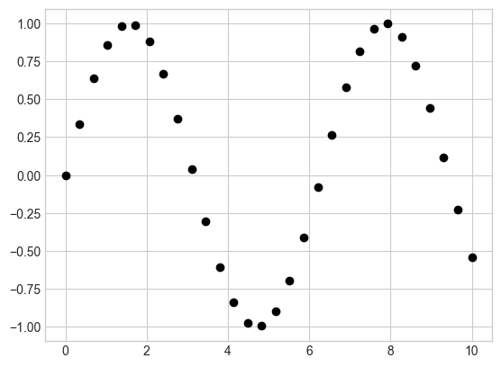
The third argument in the function call is a character that represents the type of symbol used for the plotting. Just as you can specify options such as '-' or '--' to control the line style, the marker style has its own set of short string codes. The full list of available symbols can be seen in the documentation of plt.plot, or in Matplotlib’s online documentation. Most of the possibilities are fairly intuitive, and a number of the more common ones are demonstrated here (see the following figure):
rng = np.random.default_rng(0)
for marker in ['o', '.', ',', 'x', '+', 'v', '^', '<', '>', 's', 'd']:
plt.plot(rng.random(2), rng.random(2), marker, color='black',
label="marker='{0}'".format(marker))
plt.legend(numpoints=1, fontsize=13)
plt.xlim(0, 1.8);
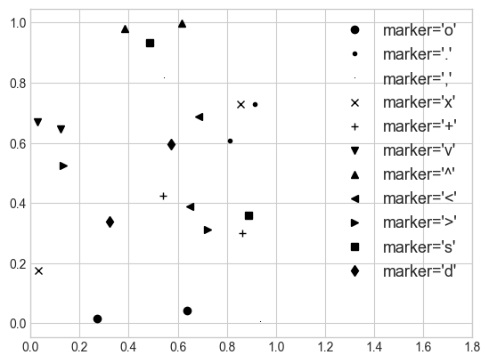
For even more possibilities, these character codes can be used together with line and color codes to plot points along with a line connecting them (see the following figure):
plt.plot(x, y, '-ok');
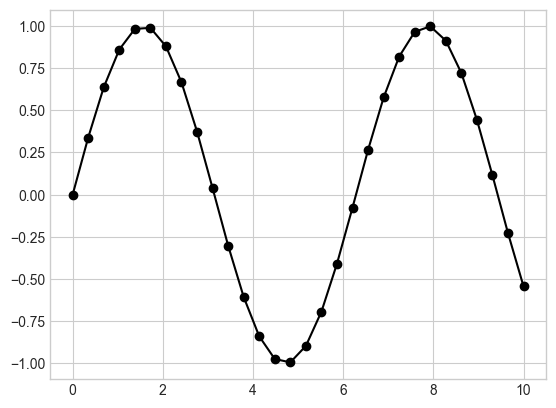
Additional keyword arguments to plt.plot specify a wide range of properties of the lines and markers, as you can see in the following figure:
plt.plot(x, y, '-p', color='gray',
markersize=15, linewidth=4,
markerfacecolor='white',
markeredgecolor='gray',
markeredgewidth=2)
plt.ylim(-1.2, 1.2);
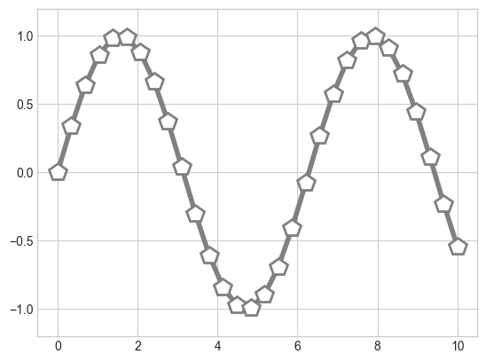
These kinds of options make plt.plot the primary workhorse for two-dimensional plots in Matplotlib.
For a full description of the options available, refer to the plt.plot documentation.
Scatter Plots with plt.scatter#
A second, more powerful method of creating scatter plots is the plt.scatter function, which can be used very similarly to the plt.plot function (see the following figure):
plt.scatter(x, y, marker='o');
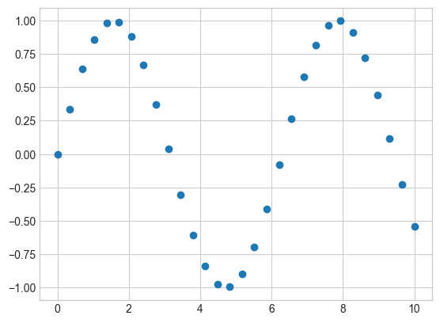
The primary difference of plt.scatter from plt.plot is that it can be used to create scatter plots where the properties of each individual point (size, face color, edge color, etc.) can be individually controlled or mapped to data.
Let’s show this by creating a random scatter plot with points of many colors and sizes.
In order to better see the overlapping results, we’ll also use the alpha keyword to adjust the transparency level (see the following figure):
rng = np.random.default_rng(0)
x = rng.normal(size=100)
y = rng.normal(size=100)
colors = rng.random(100)
sizes = 1000 * rng.random(100)
plt.scatter(x, y, c=colors, s=sizes, alpha=0.3)
plt.colorbar(); # show color scale
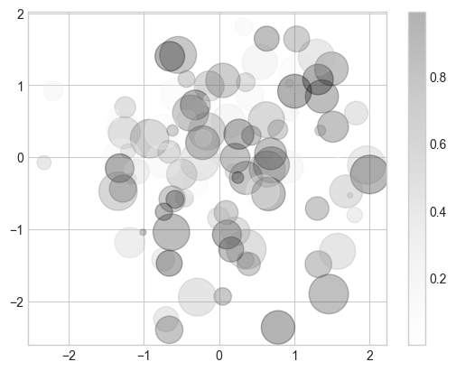
Notice that the color argument is automatically mapped to a color scale (shown here by the colorbar command), and that the size argument is given in pixels.
In this way, the color and size of points can be used to convey information in the visualization, in order to visualize multidimensional data.
For example, we might use the Iris dataset from Scikit-Learn, where each sample is one of three types of flowers that has had the size of its petals and sepals carefully measured (see the following figure):
from sklearn.datasets import load_iris
iris = load_iris()
features = iris.data.T
plt.scatter(features[0], features[1], alpha=0.4,
s=100*features[3], c=iris.target, cmap='viridis')
plt.xlabel(iris.feature_names[0])
plt.ylabel(iris.feature_names[1]);
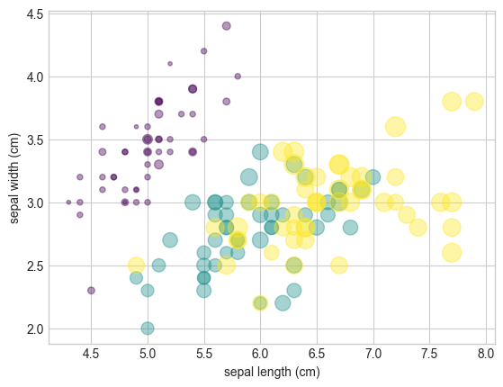
We can see that this scatter plot has given us the ability to simultaneously explore four different dimensions of the data: the (x, y) location of each point corresponds to the sepal length and width, the size of the point is related to the petal width, and the color is related to the particular species of flower. Multicolor and multifeature scatter plots like this can be useful for both exploration and presentation of data.
plot Versus scatter: A Note on Efficiency#
Aside from the different features available in plt.plot and plt.scatter, why might you choose to use one over the other? While it doesn’t matter as much for small amounts of data, as datasets get larger than a few thousand points, plt.plot can be noticeably more efficient than plt.scatter.
The reason is that plt.scatter has the capability to render a different size and/or color for each point, so the renderer must do the extra work of constructing each point individually.
With plt.plot, on the other hand, the markers for each point are guaranteed to be identical, so the work of determining the appearance of the points is done only once for the entire set of data.
For large datasets, this difference can lead to vastly different performance, and for this reason, plt.plot should be preferred over plt.scatter for large datasets.
Visualizing Uncertainties#
For any scientific measurement, accurate accounting of uncertainties is nearly as important, if not more so, as accurate reporting of the number itself. For example, imagine that I am using some astrophysical observations to estimate the Hubble Constant, the local measurement of the expansion rate of the Universe. I know that the current literature suggests a value of around 70 (km/s)/Mpc, and I measure a value of 74 (km/s)/Mpc with my method. Are the values consistent? The only correct answer, given this information, is this: there is no way to know.
Suppose I augment this information with reported uncertainties: the current literature suggests a value of 70 ± 2.5 (km/s)/Mpc, and my method has measured a value of 74 ± 5 (km/s)/Mpc. Now are the values consistent? That is a question that can be quantitatively answered.
In visualization of data and results, showing these errors effectively can make a plot convey much more complete information.
Basic Errorbars#
One standard way to visualize uncertainties is using an errorbar. A basic errorbar can be created with a single Matplotlib function call, as shown in the following figure:
x = np.linspace(0, 10, 50)
dy = 0.8
y = np.sin(x) + dy * np.random.randn(50)
plt.errorbar(x, y, yerr=dy, fmt='.k');
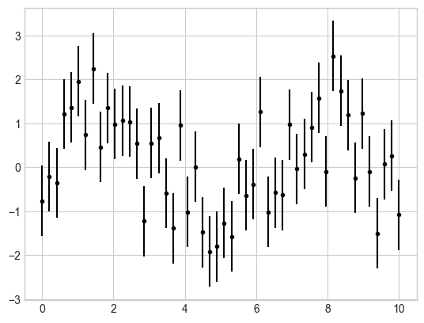
x = np.linspace(0, 10, 50)
dy = 0.8
errs = dy * np.random.randn(50)
y = np.sin(x) + errs
plt.plot(x,np.sin(x),'r-')
plt.errorbar(x, y, yerr=np.abs(errs), fmt='.k');
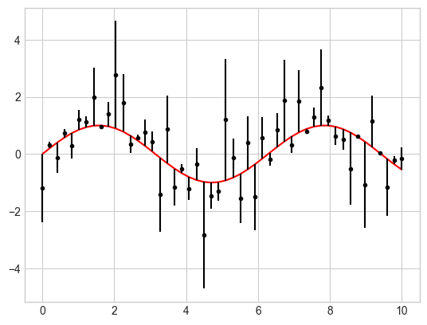
Here the fmt is a format code controlling the appearance of lines and points, and it has the same syntax as the shorthand used in plt.plot, outlined in the previous chapter and earlier in this chapter.
In addition to these basic options, the errorbar function has many options to fine-tune the outputs.
Using these additional options you can easily customize the aesthetics of your errorbar plot.
I often find it helpful, especially in crowded plots, to make the errorbars lighter than the points themselves (see the following figure):
plt.errorbar(x, y, yerr=dy, fmt='o', color='black',
ecolor='lightgray', elinewidth=3, capsize=0);
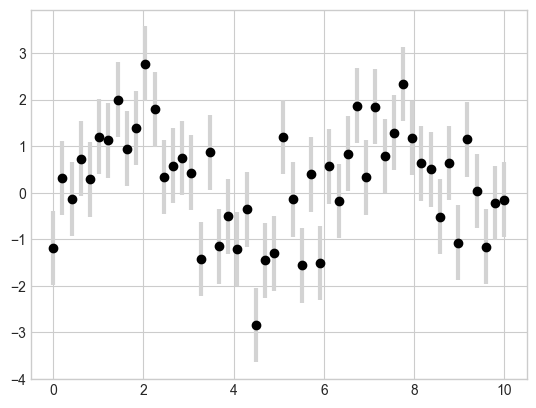
In addition to these options, you can also specify horizontal errorbars, one-sided errorbars, and many other variants.
For more information on the options available, refer to the docstring of plt.errorbar.
Continuous Errors#
In some situations it is desirable to show errorbars on continuous quantities.
Though Matplotlib does not have a built-in convenience routine for this type of application, it’s relatively easy to combine primitives like plt.plot and plt.fill_between for a useful result.
Here we’ll perform a simple Gaussian process regression, using the Scikit-Learn API. This is a method of fitting a very flexible nonparametric function to data with a continuous measure of the uncertainty. We won’t delve into the details of Gaussian process regression at this point, but will focus instead on how you might visualize such a continuous error measurement:
from sklearn.gaussian_process import GaussianProcessRegressor
# define the model and draw some data
model = lambda x: x * np.sin(x)
xdata = np.array([1, 3, 5, 6, 8])
ydata = model(xdata)
# Compute the Gaussian process fit
gp = GaussianProcessRegressor()
gp.fit(xdata[:, np.newaxis], ydata)
xfit = np.linspace(0, 10, 1000)
yfit, dyfit = gp.predict(xfit[:, np.newaxis], return_std=True)
We now have xfit, yfit, and dyfit, which sample the continuous fit to our data.
We could pass these to the plt.errorbar function as in the previous section, but we don’t really want to plot 1,000 points with 1,000 errorbars.
Instead, we can use the plt.fill_between function with a light color to visualize this continuous error (see the following figure):
# Visualize the result
plt.plot(xdata, ydata, 'or')
plt.plot(xfit, yfit, '-', color='gray')
plt.fill_between(xfit, yfit - dyfit, yfit + dyfit,
color='gray', alpha=0.2)
plt.xlim(0, 10);
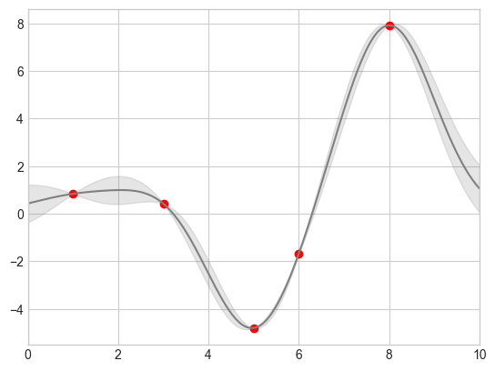
Take a look at the fill_between call signature: we pass an x value, then the lower y-bound, then the upper y-bound, and the result is that the area between these regions is filled.
The resulting figure gives an intuitive view into what the Gaussian process regression algorithm is doing: in regions near a measured data point, the model is strongly constrained, and this is reflected in the small model uncertainties. In regions far from a measured data point, the model is not strongly constrained, and the model uncertainties increase.
For more information on the options available in plt.fill_between (and the closely related plt.fill function), see the function docstring or the Matplotlib documentation.
The Seaborn package has a more streamlined API for visualizing this type of continuous errorbar.
Density and Contour Plots#
Sometimes it is useful to display three-dimensional data in two dimensions using contours or color-coded regions.
There are three Matplotlib functions that can be helpful for this task: plt.contour for contour plots, plt.contourf for filled contour plots, and plt.imshow for showing images.
This chapter looks at several examples of using these. We’ll start by setting up the notebook for plotting and importing the functions we will use:
Visualizing a Three-Dimensional Function#
Our first example demonstrates a contour plot using a function \(z = f(x, y)\), using the following particular choice for \(f\):
def f(x, y):
return np.sin(x) ** 10 + np.cos(10 + y * x) * np.cos(x)
A contour plot can be created with the plt.contour function.
It takes three arguments: a grid of x values, a grid of y values, and a grid of z values.
The x and y values represent positions on the plot, and the z values will be represented by the contour levels.
Perhaps the most straightforward way to prepare such data is to use the np.meshgrid function, which builds two-dimensional grids from one-dimensional arrays:
x = np.linspace(0, 5, 50)
y = np.linspace(0, 5, 40)
X, Y = np.meshgrid(x, y)
Z = f(X, Y)
Now let’s look at this with a standard line-only contour plot (see the following figure):
plt.contour(X, Y, Z, colors='black');
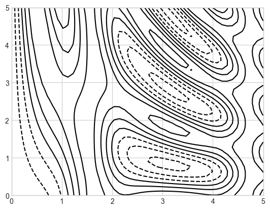
Notice that when a single color is used, negative values are represented by dashed lines and positive values by solid lines.
Alternatively, the lines can be color-coded by specifying a colormap with the cmap argument.
Here we’ll also specify that we want more lines to be drawn, at 20 equally spaced intervals within the data range, as shown in the following figure:
plt.contour(X, Y, Z, 20, cmap='RdGy');
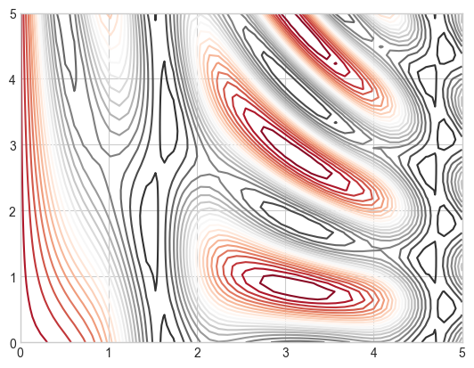
Here we chose the RdGy (short for Red–Gray) colormap, which is a good choice for divergent data: (i.e., data with positive and negative variation around zero).
Matplotlib has a wide range of colormaps available, which you can easily browse in IPython by doing a tab completion on the plt.cm module:
plt.cm.<TAB>
Our plot is looking nicer, but the spaces between the lines may be a bit distracting.
We can change this by switching to a filled contour plot using the plt.contourf function, which uses largely the same syntax as plt.contour.
Additionally, we’ll add a plt.colorbar command, which creates an additional axis with labeled color information for the plot (see the following figure):
plt.contourf(X, Y, Z, 20, cmap='RdGy')
plt.colorbar();
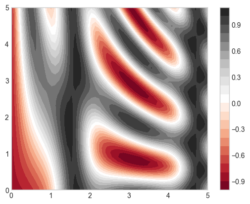
The colorbar makes it clear that the black regions are “peaks,” while the red regions are “valleys.”
One potential issue with this plot is that it is a bit splotchy: the color steps are discrete rather than continuous, which is not always what is desired.
This could be remedied by setting the number of contours to a very high number, but this results in a rather inefficient plot: Matplotlib must render a new polygon for each step in the level.
A better way to generate a smooth representation is to use the plt.imshow function, which offers the interpolation argument to generate a smooth two-dimensional representation of the data (see the following figure):
plt.imshow(Z, extent=[0, 5, 0, 5], origin='lower', cmap='RdGy',
interpolation='gaussian', aspect='equal')
plt.colorbar();
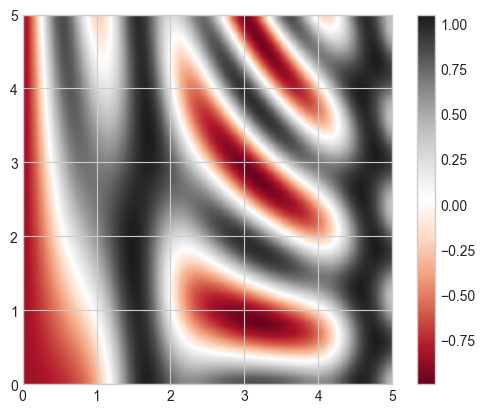
There are a few potential gotchas with plt.imshow, however:
It doesn’t accept an x and y grid, so you must manually specify the extent [xmin, xmax, ymin, ymax] of the image on the plot.
By default it follows the standard image array definition where the origin is in the upper left, not in the lower left as in most contour plots. This must be changed when showing gridded data.
It will automatically adjust the axis aspect ratio to match the input data; this can be changed with the
aspectargument.
Finally, it can sometimes be useful to combine contour plots and image plots.
For example, here we’ll use a partially transparent background image (with transparency set via the alpha parameter) and overplot contours with labels on the contours themselves, using the plt.clabel function (see the following figure):
contours = plt.contour(X, Y, Z, 3, colors='black')
plt.clabel(contours, inline=True, fontsize=8)
plt.imshow(Z, extent=[0, 5, 0, 5], origin='lower',
cmap='RdGy', alpha=0.5)
plt.colorbar();
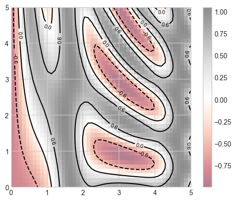
The combination of these three functions—plt.contour, plt.contourf, and plt.imshow—gives nearly limitless possibilities for displaying this sort of three-dimensional data within a two-dimensional plot.
For more information on the options available in these functions, refer to their docstrings.
Histograms, Binnings, and Density#
A simple histogram can be a great first step in understanding a dataset.
%matplotlib inline
import numpy as np
import matplotlib.pyplot as plt
plt.style.use('seaborn-v0_8-white')
rng = np.random.default_rng(1701)
data = rng.normal(size=1000)
plt.hist(data);
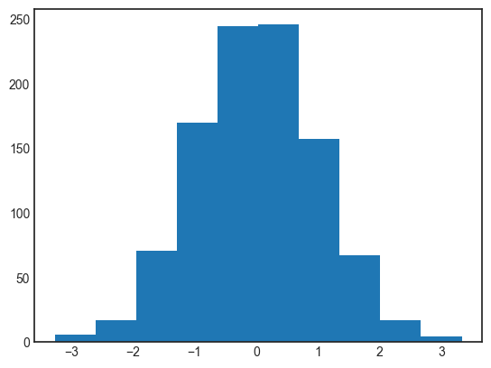
The hist function has many options to tune both the calculation and the display;
here’s an example of a more customized histogram, shown in the following figure:
plt.hist(data, bins=30, density=True, alpha=0.5,
histtype='stepfilled', color='steelblue',
edgecolor='none');
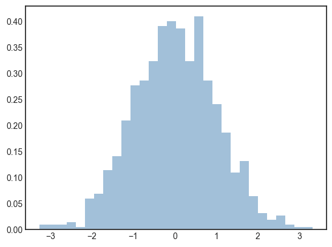
The plt.hist docstring has more information on other available customization options.
I find this combination of histtype='stepfilled' along with some transparency alpha to be helpful when comparing histograms of several distributions (see the following figure):
x1 = rng.normal(0, 0.8, 1000)
x2 = rng.normal(-2, 1, 1000)
x3 = rng.normal(3, 2, 1000)
kwargs = dict(histtype='stepfilled', alpha=0.3, density=True, bins=40)
plt.hist(x1, **kwargs)
plt.hist(x2, **kwargs)
plt.hist(x3, **kwargs);
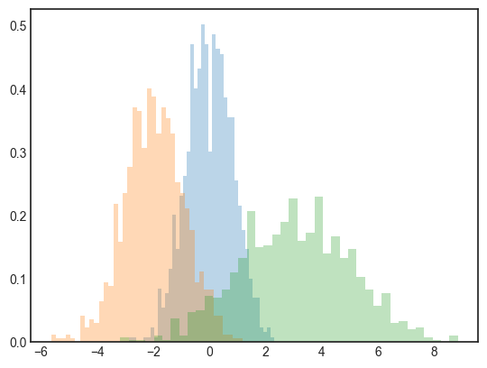
If you are interested in computing, but not displaying, the histogram (that is, counting the number of points in a given bin), you can use the np.histogram function:
counts, bin_edges = np.histogram(data, bins=5)
print(counts)
[ 23 241 491 224 21]
Two-Dimensional Histograms and Binnings#
Just as we create histograms in one dimension by dividing the number line into bins, we can also create histograms in two dimensions by dividing points among two-dimensional bins.
We’ll take a brief look at several ways to do this here.
We’ll start by defining some data—an x and y array drawn from a multivariate Gaussian distribution:
mean = [0, 0]
cov = [[1, 1], [1, 2]]
x, y = rng.multivariate_normal(mean, cov, 10000).T
plt.hist2d: Two-dimensional histogram#
One straightforward way to plot a two-dimensional histogram is to use Matplotlib’s plt.hist2d function (see the following figure):
plt.hist2d(x, y, bins=30)
cb = plt.colorbar()
cb.set_label('counts in bin')
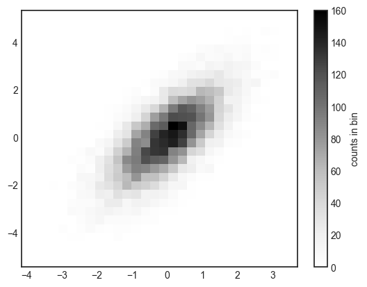
Just like plt.hist, plt.hist2d has a number of extra options to fine-tune the plot and the binning, which are nicely outlined in the function docstring.
Further, just as plt.hist has a counterpart in np.histogram, plt.hist2d has a counterpart in np.histogram2d:
counts, xedges, yedges = np.histogram2d(x, y, bins=30)
print(counts.shape)
(30, 30)
For the generalization of this histogram binning when there are more than two dimensions, see the np.histogramdd function.
Multiple Subplots#
Sometimes it is helpful to compare different views of data side by side. To this end, Matplotlib has the concept of subplots: groups of smaller axes that can exist together within a single figure. These subplots might be insets, grids of plots, or other more complicated layouts. In this chapter we’ll explore four routines for creating subplots in Matplotlib. We’ll start by importing the packages we will use:
%matplotlib inline
import matplotlib.pyplot as plt
plt.style.use('seaborn-white')
import numpy as np
---------------------------------------------------------------------------
FileNotFoundError Traceback (most recent call last)
File ~\AppData\Local\Programs\Python\Python312\Lib\site-packages\matplotlib\style\core.py:137, in use(style)
136 try:
--> 137 style = _rc_params_in_file(style)
138 except OSError as err:
File ~\AppData\Local\Programs\Python\Python312\Lib\site-packages\matplotlib\__init__.py:879, in _rc_params_in_file(fname, transform, fail_on_error)
878 rc_temp = {}
--> 879 with _open_file_or_url(fname) as fd:
880 try:
File ~\AppData\Local\Programs\Python\Python312\Lib\contextlib.py:137, in _GeneratorContextManager.__enter__(self)
136 try:
--> 137 return next(self.gen)
138 except StopIteration:
File ~\AppData\Local\Programs\Python\Python312\Lib\site-packages\matplotlib\__init__.py:856, in _open_file_or_url(fname)
855 fname = os.path.expanduser(fname)
--> 856 with open(fname, encoding='utf-8') as f:
857 yield f
FileNotFoundError: [Errno 2] No such file or directory: 'seaborn-white'
The above exception was the direct cause of the following exception:
OSError Traceback (most recent call last)
Cell In[57], line 3
1 get_ipython().run_line_magic('matplotlib', 'inline')
2 import matplotlib.pyplot as plt
----> 3 plt.style.use('seaborn-white')
4 import numpy as np
File ~\AppData\Local\Programs\Python\Python312\Lib\site-packages\matplotlib\style\core.py:139, in use(style)
137 style = _rc_params_in_file(style)
138 except OSError as err:
--> 139 raise OSError(
140 f"{style!r} is not a valid package style, path of style "
141 f"file, URL of style file, or library style name (library "
142 f"styles are listed in `style.available`)") from err
143 filtered = {}
144 for k in style: # don't trigger RcParams.__getitem__('backend')
OSError: 'seaborn-white' is not a valid package style, path of style file, URL of style file, or library style name (library styles are listed in `style.available`)
plt.axes: Subplots by Hand#
The most basic method of creating an axes is to use the plt.axes function.
As we’ve seen previously, by default this creates a standard axes object that fills the entire figure.
plt.axes also takes an optional argument that is a list of four numbers in the figure coordinate system ([left, bottom, width, height]), which ranges from 0 at the bottom left of the figure to 1 at the top right of the figure.
For example, we might create an inset axes at the top-right corner of another axes by setting the x and y position to 0.65 (that is, starting at 65% of the width and 65% of the height of the figure) and the x and y extents to 0.2 (that is, the size of the axes is 20% of the width and 20% of the height of the figure). The following figure shows the result:
ax1 = plt.axes() # standard axes
ax2 = plt.axes([0.65, 0.65, 0.2, 0.2])
ax3 = plt.axes([0.15, 0.35, 0.2, 0.2])
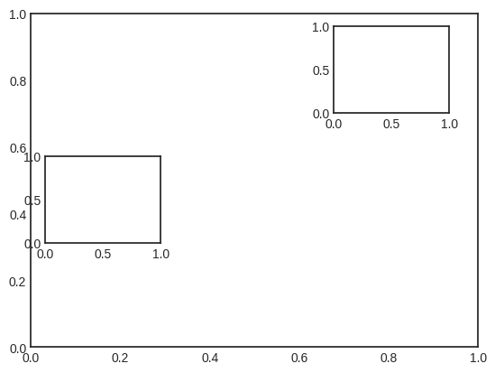
The equivalent of this command within the object-oriented interface is fig.add_axes. Let’s use this to create two vertically stacked axes, as seen in the following figure:
fig = plt.figure()
ax1 = fig.add_axes([0.1, 0.5, 0.8, 0.4],
xticklabels=[], ylim=(-1.2, 1.2))
ax2 = fig.add_axes([0.1, 0.1, 0.8, 0.4],
ylim=(-1.2, 1.2))
x = np.linspace(0, 10)
ax1.plot(np.sin(x))
ax2.plot(np.cos(x));
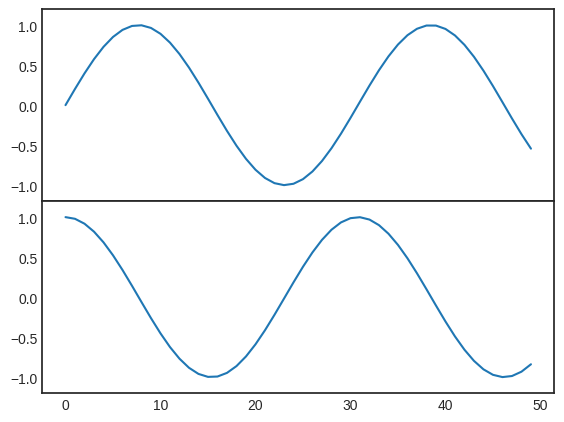
We now have two axes (the top with no tick labels) that are just touching: the bottom of the upper panel (at position 0.5) matches the top of the lower panel (at position 0.1 + 0.4).
plt.subplot: Simple Grids of Subplots#
Aligned columns or rows of subplots are a common enough need that Matplotlib has several convenience routines that make them easy to create.
The lowest level of these is plt.subplot, which creates a single subplot within a grid.
As you can see, this command takes three integer arguments—the number of rows, the number of columns, and the index of the plot to be created in this scheme, which runs from the upper left to the bottom right (see the following figure):
for i in range(1, 7):
plt.subplot(2, 3, i)
plt.text(0.5, 0.5, str((2, 3, i)),
fontsize=18, ha='center')
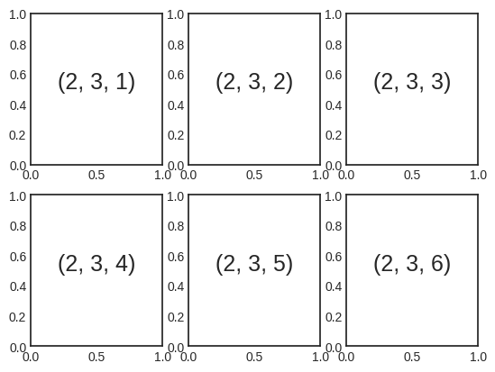
The command plt.subplots_adjust can be used to adjust the spacing between these plots.
The following code uses the equivalent object-oriented command, fig.add_subplot; the following figure shows the result:
fig = plt.figure()
fig.subplots_adjust(hspace=0.4, wspace=0.4)
for i in range(1, 7):
ax = fig.add_subplot(2, 3, i)
ax.text(0.5, 0.5, str((2, 3, i)),
fontsize=18, ha='center')
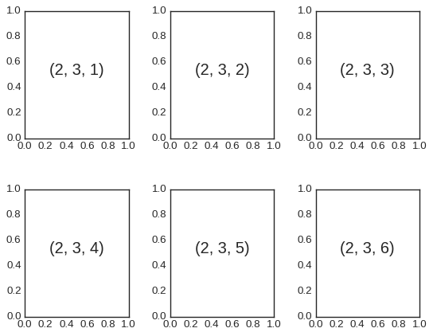
Here we’ve used the hspace and wspace arguments of plt.subplots_adjust, which specify the spacing along the height and width of the figure, in units of the subplot size (in this case, the space is 40% of the subplot width and height).
plt.subplots: The Whole Grid in One Go#
The approach just described quickly becomes tedious when creating a large grid of subplots, especially if you’d like to hide the x- and y-axis labels on the inner plots.
For this purpose, plt.subplots is the easier tool to use (note the s at the end of subplots). Rather than creating a single subplot, this function creates a full grid of subplots in a single line, returning them in a NumPy array.
The arguments are the number of rows and number of columns, along with optional keywords sharex and sharey, which allow you to specify the relationships between different axes.
Let’s create a \(2 \times 3\) grid of subplots, where all axes in the same row share their y-axis scale, and all axes in the same column share their x-axis scale (see the following figure):
fig, ax = plt.subplots(2, 3, sharex='col', sharey='row')
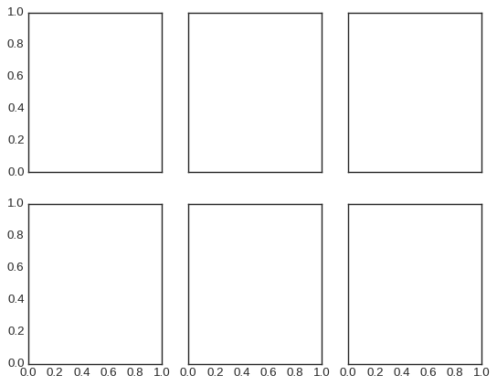
By specifying sharex and sharey, we’ve automatically removed inner labels on the grid to make the plot cleaner.
The resulting grid of axes instances is returned within a NumPy array, allowing for convenient specification of the desired axes using standard array indexing notation (see the following figure):
# axes are in a two-dimensional array, indexed by [row, col]
for i in range(2):
for j in range(3):
ax[i, j].text(0.5, 0.5, str((i, j)),
fontsize=18, ha='center')
fig

In comparison to plt.subplot, plt.subplots is more consistent with Python’s conventional zero-based indexing, whereas plt.subplot uses MATLAB-style one-based indexing.
plt.GridSpec: More Complicated Arrangements#
To go beyond a regular grid to subplots that span multiple rows and columns, plt.GridSpec is the best tool.
plt.GridSpec does not create a plot by itself; it is rather a convenient interface that is recognized by the plt.subplot command.
For example, a GridSpec for a grid of two rows and three columns with some specified width and height space looks like this:
grid = plt.GridSpec(2, 3, wspace=0.4, hspace=0.3)
From this we can specify subplot locations and extents using the familiar Python slicing syntax (see the following figure):
plt.subplot(grid[0, 0])
plt.subplot(grid[0, 1:])
plt.subplot(grid[1, :2])
plt.subplot(grid[1, 2]);

This type of flexible grid alignment has a wide range of uses. I most often use it when creating multiaxes histogram plots like the ones shown in the following figure:
# Create some normally distributed data
mean = [0, 0]
cov = [[1, 1], [1, 2]]
rng = np.random.default_rng(1701)
x, y = rng.multivariate_normal(mean, cov, 3000).T
# Set up the axes with GridSpec
fig = plt.figure(figsize=(6, 6))
grid = plt.GridSpec(4, 4, hspace=0.2, wspace=0.2)
main_ax = fig.add_subplot(grid[:-1, 1:])
y_hist = fig.add_subplot(grid[:-1, 0], xticklabels=[], sharey=main_ax)
x_hist = fig.add_subplot(grid[-1, 1:], yticklabels=[], sharex=main_ax)
# Scatter points on the main axes
main_ax.plot(x, y, 'ok', markersize=3, alpha=0.2)
# Histogram on the attached axes
x_hist.hist(x, 40, histtype='stepfilled',
orientation='vertical', color='gray')
x_hist.invert_yaxis()
y_hist.hist(y, 40, histtype='stepfilled',
orientation='horizontal', color='gray')
y_hist.invert_xaxis()
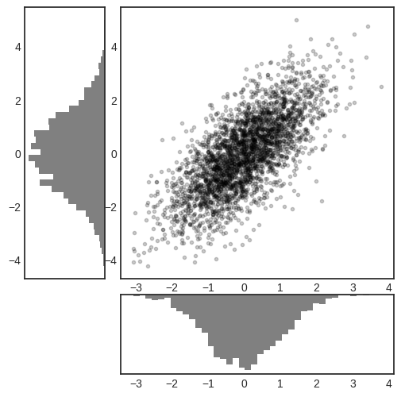
Visualization with Seaborn#
Matplotlib has been at the core of scientific visualization in Python for decades, but even avid users will admit it often leaves much to be desired. There are several complaints about Matplotlib that often come up:
A common early complaint, which is now outdated: prior to version 2.0, Matplotlib’s color and style defaults were at times poor and looked dated.
Matplotlib’s API is relatively low-level. Doing sophisticated statistical visualization is possible, but often requires a lot of boilerplate code.
Matplotlib predated Pandas by more than a decade, and thus is not designed for use with Pandas
DataFrameobjects. In order to visualize data from aDataFrame, you must extract eachSeriesand often concatenate them together into the right format. It would be nicer to have a plotting library that can intelligently use theDataFramelabels in a plot.
An answer to these problems is Seaborn. Seaborn provides an API on top of Matplotlib that offers sane choices for plot style and color defaults, defines simple high-level functions for common statistical plot types, and integrates with the functionality provided by Pandas.
To be fair, the Matplotlib team has adapted to the changing landscape: it added the plt.style tools, and Matplotlib is starting to handle Pandas data more seamlessly.
But for all the reasons just discussed, Seaborn remains a useful add-on.
By convention, Seaborn is often imported as sns:
%matplotlib inline
import matplotlib.pyplot as plt
import seaborn as sns
import numpy as np
import pandas as pd
sns.set() # seaborn's method to set its chart style
Exploring Seaborn Plots#
The main idea of Seaborn is that it provides high-level commands to create a variety of plot types useful for statistical data exploration, and even some statistical model fitting.
Let’s take a look at a few of the datasets and plot types available in Seaborn. Note that all of the following could be done using raw Matplotlib commands (this is, in fact, what Seaborn does under the hood), but the Seaborn API is much more convenient.
Histograms, KDE, and Densities#
Often in statistical data visualization, all you want is to plot histograms and joint distributions of variables. We have seen that this is relatively straightforward in Matplotlib (see the following figure):
data = np.random.multivariate_normal([0, 0], [[5, 2], [2, 2]], size=2000)
data = pd.DataFrame(data, columns=['x', 'y'])
for col in 'xy':
plt.hist(data[col], density=True, alpha=0.5)
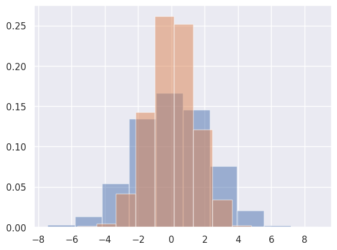
Rather than just providing a histogram as a visual output, we can get a smooth estimate of the distribution using kernel density estimation, which Seaborn does with sns.kdeplot (see the following figure):
sns.kdeplot(data=data, shade=True);
<ipython-input-3-2f0c6f43b75e>:1: FutureWarning:
`shade` is now deprecated in favor of `fill`; setting `fill=True`.
This will become an error in seaborn v0.14.0; please update your code.
sns.kdeplot(data=data, shade=True);
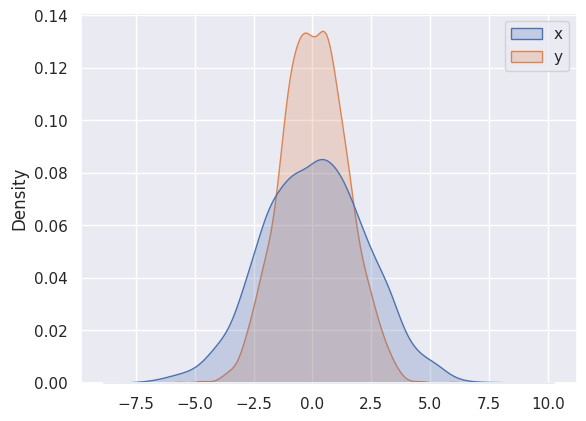
If we pass x and y columns to kdeplot, we instead get a two-dimensional visualization of the joint density (see the following figure):
sns.kdeplot(data=data, x='x', y='y');
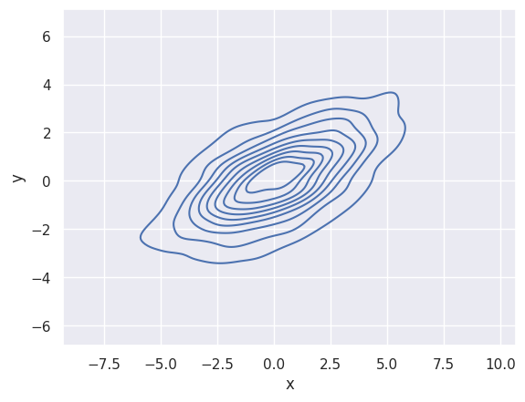
We can see the joint distribution and the marginal distributions together using sns.jointplot, which we’ll explore further later in this chapter.
Pair Plots#
When you generalize joint plots to datasets of larger dimensions, you end up with pair plots. These are very useful for exploring correlations between multidimensional data, when you’d like to plot all pairs of values against each other.
We’ll demo this with the well-known Iris dataset, which lists measurements of petals and sepals of three Iris species:
iris = sns.load_dataset("iris")
iris.head()
| sepal_length | sepal_width | petal_length | petal_width | species | |
|---|---|---|---|---|---|
| 0 | 5.1 | 3.5 | 1.4 | 0.2 | setosa |
| 1 | 4.9 | 3.0 | 1.4 | 0.2 | setosa |
| 2 | 4.7 | 3.2 | 1.3 | 0.2 | setosa |
| 3 | 4.6 | 3.1 | 1.5 | 0.2 | setosa |
| 4 | 5.0 | 3.6 | 1.4 | 0.2 | setosa |
Visualizing the multidimensional relationships among the samples is as easy as calling sns.pairplot (see the following figure):
sns.pairplot(iris, hue='species', height=2.5);
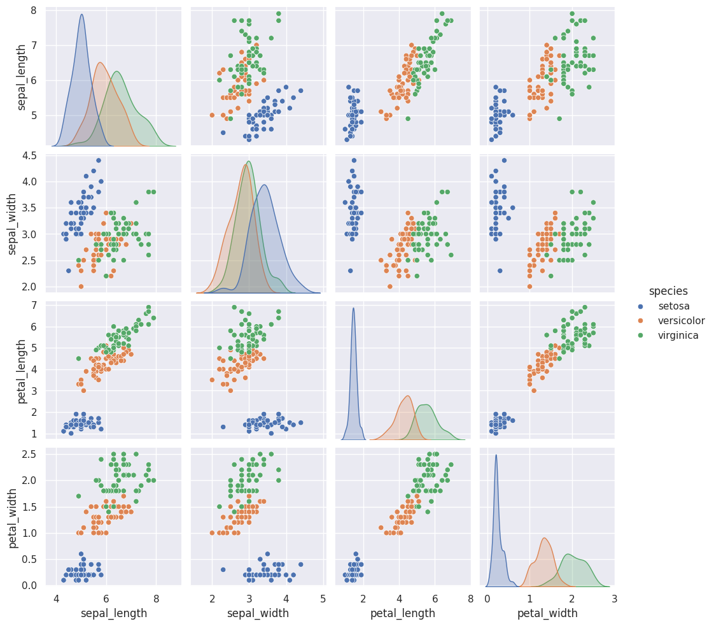
Faceted Histograms#
Sometimes the best way to view data is via histograms of subsets. Seaborn’s FacetGrid makes this simple.
We’ll take a look at some data that shows the amount that restaurant staff receive in tips based on various indicator data:[1]
tips = sns.load_dataset('tips')
tips.head()
| total_bill | tip | sex | smoker | day | time | size | |
|---|---|---|---|---|---|---|---|
| 0 | 16.99 | 1.01 | Female | No | Sun | Dinner | 2 |
| 1 | 10.34 | 1.66 | Male | No | Sun | Dinner | 3 |
| 2 | 21.01 | 3.50 | Male | No | Sun | Dinner | 3 |
| 3 | 23.68 | 3.31 | Male | No | Sun | Dinner | 2 |
| 4 | 24.59 | 3.61 | Female | No | Sun | Dinner | 4 |
tips['tip_pct'] = 100 * tips['tip'] / tips['total_bill']
grid = sns.FacetGrid(tips, row="sex", col="time", margin_titles=True)
grid.map(plt.hist, "tip_pct", bins=np.linspace(0, 40, 15));
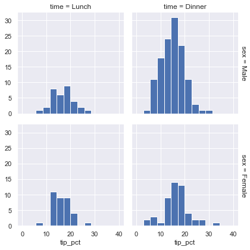
The faceted chart gives us some quick insights into the dataset: for example, we see that it contains far more data on male servers during the dinner hour than other categories, and typical tip amounts appear to range from approximately 10% to 20%, with some outliers on either end.
Categorical Plots#
Categorical plots can be useful for this kind of visualization as well. These allow you to view the distribution of a parameter within bins defined by any other parameter, as shown in the following figure:
with sns.axes_style(style='ticks'):
g = sns.catplot(x="day", y="total_bill", hue="sex", data=tips, kind="box")
g.set_axis_labels("Day", "Total Bill");

Joint Distributions#
Similar to the pair plot we saw earlier, we can use sns.jointplot to show the joint distribution between different datasets, along with the associated marginal distributions (see the following figure):
with sns.axes_style('white'):
sns.jointplot(x="total_bill", y="tip", data=tips, kind='hex')
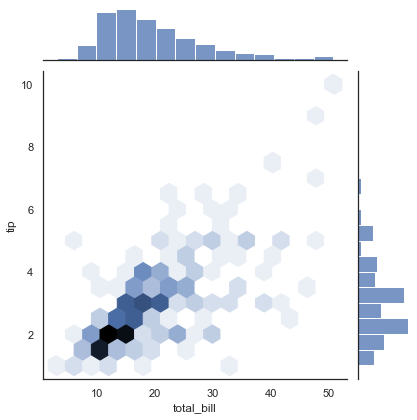
The joint plot can even do some automatic kernel density estimation and regression, as shown in the following figure:
sns.jointplot(x="total_bill", y="tip", data=tips, kind='reg');

Bar Plots#
Time series can be plotted using sns.factorplot. In the following example, we’ll use the Planets dataset:
planets = sns.load_dataset('planets')
planets.head()
| method | number | orbital_period | mass | distance | year | |
|---|---|---|---|---|---|---|
| 0 | Radial Velocity | 1 | 269.300 | 7.10 | 77.40 | 2006 |
| 1 | Radial Velocity | 1 | 874.774 | 2.21 | 56.95 | 2008 |
| 2 | Radial Velocity | 1 | 763.000 | 2.60 | 19.84 | 2011 |
| 3 | Radial Velocity | 1 | 326.030 | 19.40 | 110.62 | 2007 |
| 4 | Radial Velocity | 1 | 516.220 | 10.50 | 119.47 | 2009 |
with sns.axes_style('white'):
g = sns.catplot(x="year", data=planets, aspect=2,
kind="count", color='steelblue')
g.set_xticklabels(step=5)

We can learn more by looking at the method of discovery of each of these planets (see the following figure):
with sns.axes_style('white'):
g = sns.catplot(x="year", data=planets, aspect=4.0, kind='count',
hue='method', order=range(2001, 2015))
g.set_ylabels('Number of Planets Discovered')
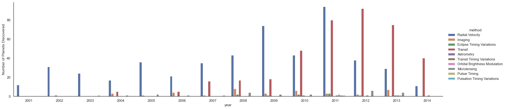
For more information on plotting with Seaborn, see the Seaborn documentation, and particularly the example gallery.
Visualization of high dimensional data#
Later in the semester, we will learn method to perform dimension reduction that can essentially map high dimensional data to low dimension for visualization and analysis purposes.
Domain-specific data visualization tools#
Geospatial: https://www.arcgis.com/index.html
Commercial: e.g., https://www.tableau.com/